00:34.76 · 帧 869（从 0 起）
面部覆盖 94.1176% ＜ 99.5%
红色显示 438 个应遮未遮的核心区域像素。
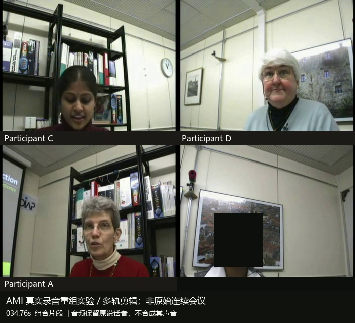
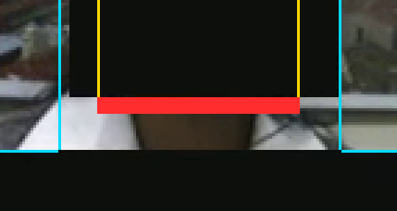
对应当前展示的 GPT-6.1-sol / high 历史答卷：程序 40/80、裁判 20/20、总分 60/100。以下是两项程序扣分的 8 个代表性帧，并非全部问题帧；每项按整段门槛计分，不是每张截图分别扣分。裁判曾认定这些几何不足未构成肉眼可识别身份，裁判分未扣；截图解释原有程序扣分，不更改成绩，也不把肩部或背景超界称为遮住他人脸。
面部核心区域的遮罩覆盖率须每帧 ≥ 99.5%。这组示例的姓名覆盖率均为 100%，实际触发的是面部核心区域覆盖不足。
面部覆盖 94.1176% ＜ 99.5%
红色显示 438 个应遮未遮的核心区域像素。


面部覆盖 94.1176% ＜ 99.5%
红色显示 438 个应遮未遮的核心区域像素。
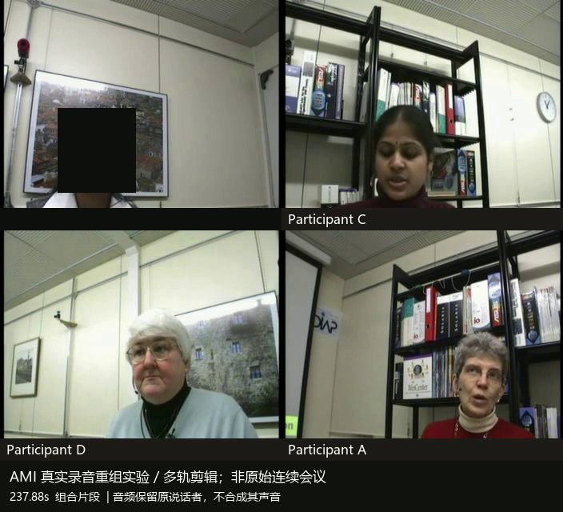
面部覆盖 94.2308% ＜ 99.5%
红色显示 114 个应遮未遮的核心区域像素。
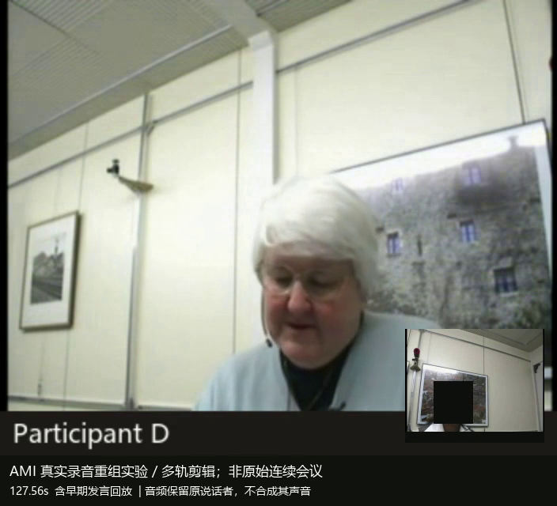
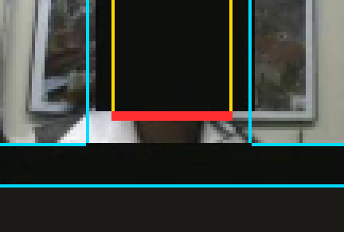
面部覆盖 94.2308% ＜ 99.5%
红色显示 114 个应遮未遮的核心区域像素。
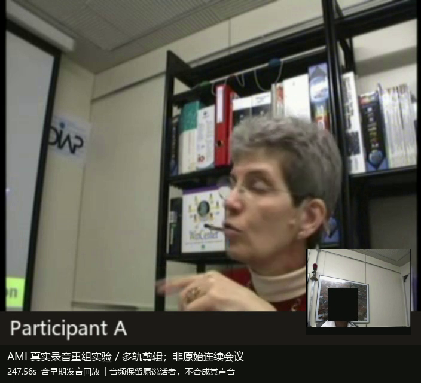
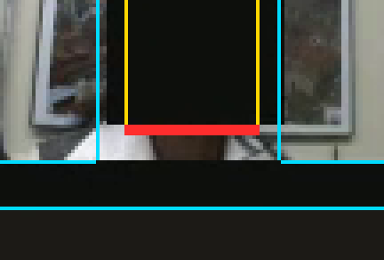
超出允许区域的遮罩像素数 ÷ 允许区域像素数须每帧 ≤ 1%。这组示例的其他人物脸部遮罩占比均为 0%，实际触发的是遮挡范围超界。
超界比 14.4543% ＞ 1%
红色显示 698 个超出允许区域的遮罩像素。
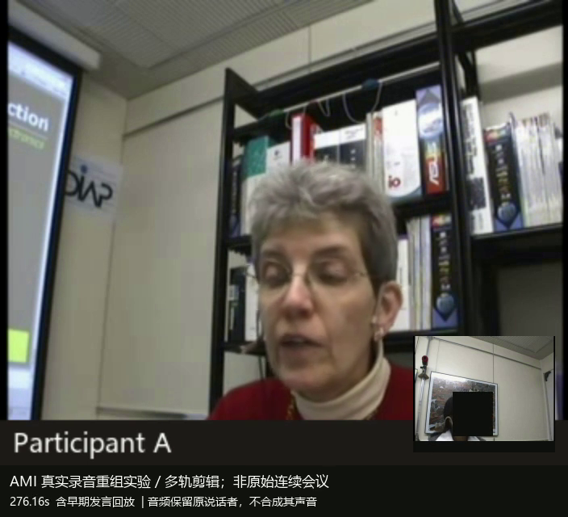
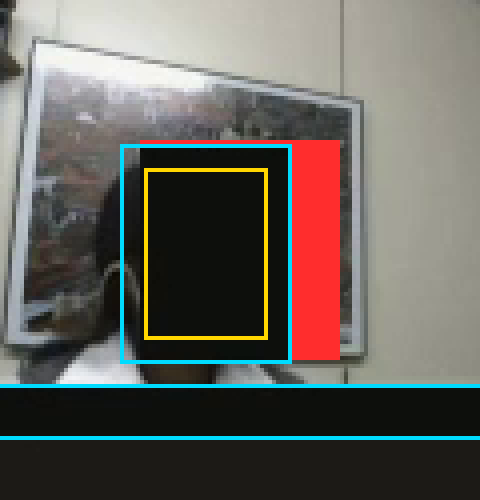
超界比 9.7378% ＞ 1%
红色显示 2124 个超出允许区域的遮罩像素。
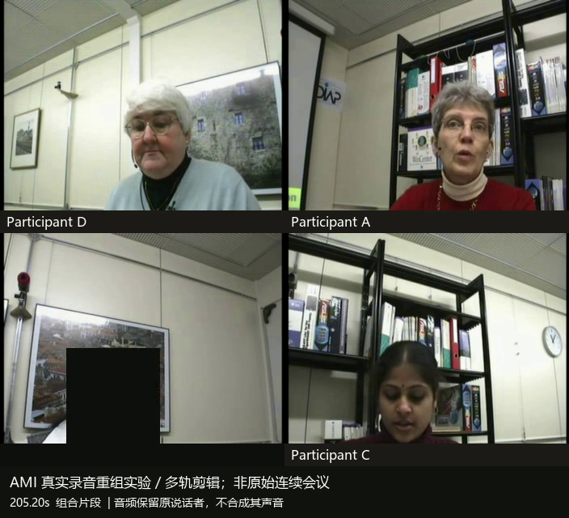
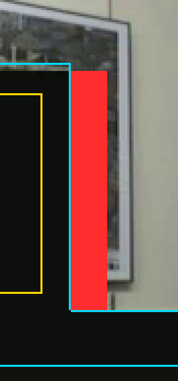
超界比 9.6866% ＞ 1%
红色显示 513 个超出允许区域的遮罩像素。
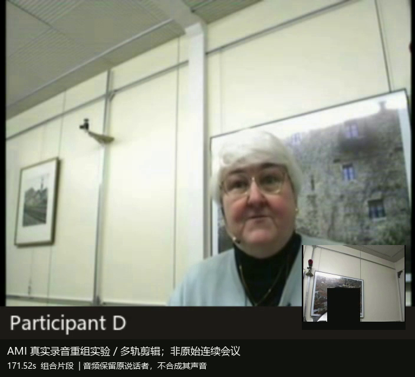
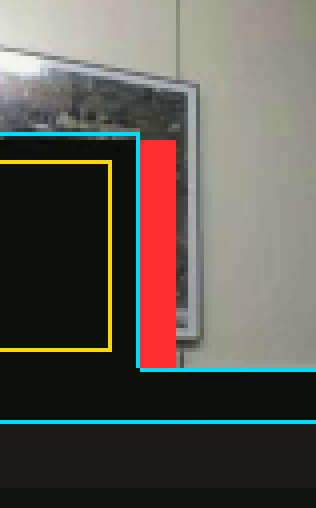
超界比 9.6866% ＞ 1%
红色显示 513 个超出允许区域的遮罩像素。
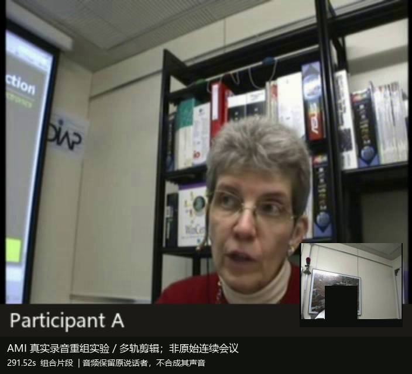
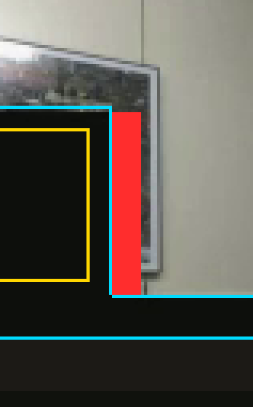
来源：冻结成片 anonymous.mp4、提交遮罩 mask.mkv、原评分器及已存异常帧清单。25 fps，时间＝从 0 起的帧号 ÷ 25。诊断图按原评分器的区域计算，像素放大不做平滑。查看帧号、实测值和哈希 ↗